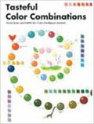

Tasteful Color Combinations
(4th reprint)
Design:Naomi Kuno
Measures:210mm×150mm
Binding:168pp., Hardback
color photographs,
Text in English
Date:May 2009
ISBN:978-981-245-228-3
Subject:Graphic
Publisher:PageOne (Singapore)
Description:
This book focuses on the relationship between "feeling" and colour combination by introducing the diverse ways colour combination is affected by the five senses of sight, smell, hearing, taste and touch.
Consisting of 14 chapters of "feeling", the text contains over 46 detailed 'emotions' with 455 tasteful colour combinations to match.A further 1,833 differing design tones also provide a better appreciation of the emotions, delicacy and harmony of colour combination.
Ideal not only for designing, but also activities requiring creative senses, planning and development and coordination. This book is a useful resource of ideas for colour tastes, colour combinations, colour planning and naming for all those involved in any aspect of design or plan development, as well as many other fields.
Price: гд 150 RMB
(Only for Chinese market)
